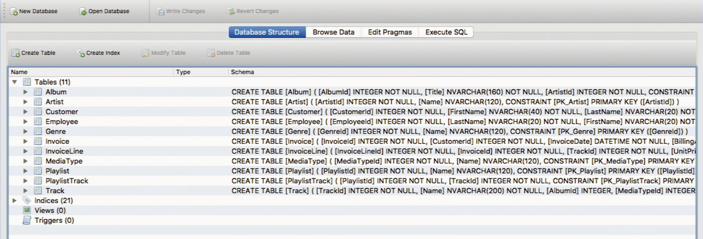
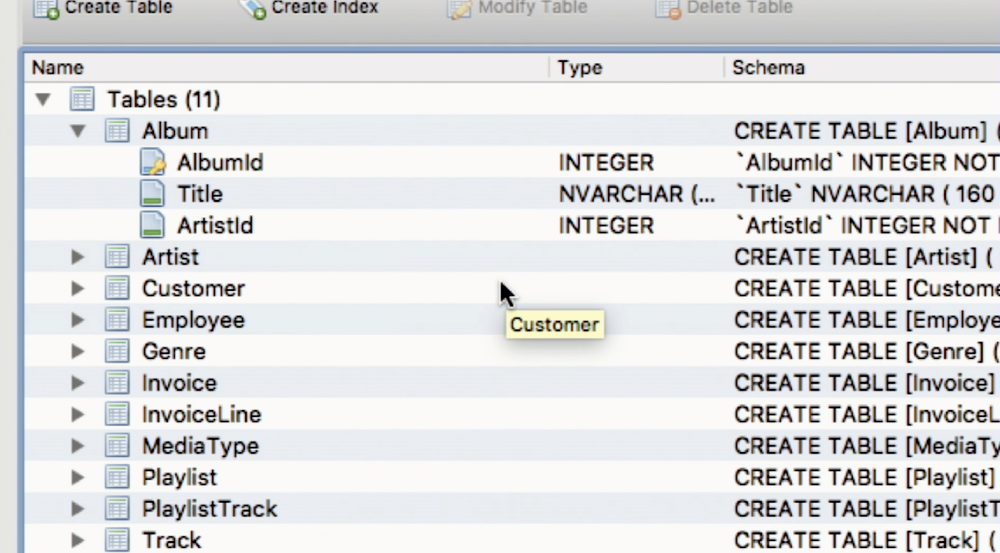

讲座 8
- Spreadsheets
- 数据库
- Data Types
- SQL
- Executing SQL Queries
- Race Conditions
- SQL Injection Attacks
- Scalability
Spreadsheets
-
Let’s create a sample spreadsheet for users in a web application. The first row of a spreadsheet generally includes a header.
username 姓名 电子邮件 address phone age malan David Malan malan@harvard.edu 33 Oxford Street, Cambridge, MA 02138 617-495-5000 -
Each column has a data type, like a number or some text. For the
usernameandemailfields, the values are additionally unique. -
We can also relate spreadsheets with one another by having some 排序 of common identifier; perhaps we would like a spreadsheets with customer information, invoices, products, or any number of other types of data. To relate the data in these spreadsheets, we can use a customer ID.
-
We might start needing larger and larger spreadsheets, and eventually, we might have 更多 rows of data than these programs, like Microsoft Excel or Google Sheets, can handle. In that case, we might want to use a database instead.
数据库
-
A database is a piece of software that can run on our operating systems. Commonly, however, it runs on a server or somewhere else in the cloud to which our software connects.
-
Relational 数据库 mimic the design of spreadsheets—data is stored in rows and columns, and we get 更多 and 更多 rows as we have 更多 and 更多 data.
-
Instead of having spreadsheets, we have a database, and instead of calling individual tabs sheets, we call them tables.
-
Additionally, we have to choose between various data types for each column. This will make searching and sorting the data much 更多 efficient.
-
示例 include Oracle, Microsoft Access, SQL Server, My SQL, Postgres, or SQLite.
-
Data Types
-
Some of the data types we can use in SQLite include
integer,real,numeric,text, andblob.-
We can use an
integerif we would like to represent something like 1, 2, 3, or a negative. -
We can use
realif we’d like to store a floating point value. -
We can use
numericif we would like to represent dates, times, or other types that are numbers but have 更多 formal structures. -
We can use
textif we have words, phrases, or even whole paragraphs. -
We can use
blobif we would like to store binary large objects, or binary data, like actual files!
-
-
Other 数据库 support 更多 than these data types, which allows the database to make smarter decisions when storing this data, so when we query the data, the database can respond quickly.
-
In some 数据库, the
integertype can be subdivided intosmallint,integer, andbigint, where thesmallinttype takes up 2 bytes, theintegertype takes up 4 bytes, and thebiginttype takes up 8 bytes. -
The
realdata type can be subdivided intorealanddouble precision, where arealtype takes up 4 bytes anddouble precisiontakes up 8 bytes. -
The
numericdata type can includeboolean,date,datetime,numeric(scale, precision),time, andtimestamp.-
An 示例 of
numeric(scale, precision)might be dollar amounts, where we want to store these to two decimal points. -
timestampcounts the number of milliseconds or seconds from a certain starting point. It became conventional to start counting 时间 from 一月 1st, 1970, and sincetimestamphas 4 bytes, when we get to 2038, we’ll run out of bits to represent 时间! To fix this, we’ll just have to use 更多 space.
-
-
The
textdata type can be subdivided intochar(n),varchar(n), andtext.-
We use
char(n)when we would like to store a fixed number of characters, like state abbreviations, for 示例. Storing values ascharcan be very efficient, as indexing is a lot simpler knowing that after eachncharacters, we have a new value, which allows the database to 排序 and 搜索 with ease. -
We use
varchar(n)when we would like to store values containing up toncharacters. -
We use
textwhenever we have particularly large text.
-
-
-
Taking a look at our spreadsheet again, we might assign these data types:
username 姓名 电子邮件 address phone 日期 of birth varchar(255) varchar(255) varchar(255) varchar(255) char(10) 日期 -
笔记 that we’ve used
varchar(255)for many of these fields. Historically, many 数据库 had limits of 255 for a varchar, so this is used very commonly. -
These data types are not the only ones that can be used. Based on the data we’re storing, these types can be different.
-
SQL
-
SQL, a database language, has some fundamental operations that allow us to work with data inside 数据库. These operations include:
CREATESELECT-
UPDATE,INSERT -
DELETE,DROP
-
We will use SQLite, an implementation of SQL, which stores its tables locally, as a file. Additionally, a number of programs can be used to communicate with a SQL database. We will use DB Browser, which can also be installed on a Mac or PC.
-
When we 打开 DB Browser, we’ll see a list of tables, as shown below.

-
If we 打开 a few tables, we can see the columns inside each, as shown.

-
We might 笔记 that we see a lot of columns with various IDs. This will help us avoid redundancy.
-
For 示例, let us reconsider our spreadsheet. We currently have the address of the user “malan” as “33 Oxford Street, Cambridge, MA 02138.”
-
It would be rather inefficient for us to perform simple queries on that address column, like searching for the zip code “02138.” We would have to 搜索 all of the values in the column and also ignore the extraneous information stored in that address.
-
To fix this, we can change the address field to multiple fields. For 示例, we can have this table instead:
username 姓名 电子邮件 street city state zip phone age malan David Malan malan@harvard.edu 33 Oxford Street Cambridge MA 02138 617-495-5000 -
We might assign these data types to the new fields:
username 姓名 电子邮件 street city state zip phone age varchar(255) varchar(255) varchar(255) varchar(255) varchar(255) char(2) char(5) char(10) 日期
-
-
Additionally, it turns out that multiple people have that address (we leave them unnamed here). Then, this address would appear repeatedly in our table.
username 姓名 电子邮件 street city state zip phone age malan David Malan malan@harvard.edu 33 Oxford Street Cambridge MA 02138 617-495-5000 33 Oxford Street Cambridge MA 02138 33 Oxford Street Cambridge MA 02138 33 Oxford Street Cambridge MA 02138 33 Oxford Street Cambridge MA 02138 -
To avoid this redundancy, we can create a separate table called “cities.” Inside this table, we’ll have to include an ID to be able to link the 上一页 spreadsheet to this spreadsheet. We might format the cities table like this:
id city state zip integer varchar(255) char(2) char(5) 1 Cambridge MA 02138 -
Now, if we go 返回 to our original table, we can just write this:
username 姓名 电子邮件 street city_id phone age malan David Malan malan@harvard.edu 33 Oxford Street 1 617-495-5000 33 Oxford Street 1 33 Oxford Street 1 33 Oxford Street 1 33 Oxford Street 1 33 Oxford Street 1 -
It’s much 更多 efficient for the computer to perform operations on and relate these small numbers we’ve used for IDs.
-
-
-
返回 to our music database, we’ll notice that the
Albumtable is related to theArtisttable via an ArtistId. This way, multiple albums can have the same artist without storing the artist’s 姓名 multiple times. -
Additionally, if an artist were to change their 姓名, we can simply change their 姓名 in the
Artisttable, without having to go through the entireAlbumtable, searching for that artist.
Executing SQL Queries
-
If we want to see all the albums in the table, we can write
SELECT * FROM Album;whereSELECT *means to return all columns. After executing, we’ll get a table with the information we would like 返回. The first 5 entries are shown here (the leftmost column is the row number):AlbumId Title ArtistId 1 1 For Those 关于 To Rock We Salute You 1 2 2 Balls to the Wall 2 3 3 Restless and Wild 2 4 4 Let There Be Rock 1 5 5 Big Ones 3 -
If we’re curious 关于 who wrote “For Those 关于 To Rock We Salute You,” we’ll take 笔记 of the
ArtistIdfor this song, or 1. Then, we can execute another SQL query:SELECT * FROM Artist WHERE ArtistId = 1;. This is our result:ArtistId 姓名 1 1 AC/DC - 笔记 that we used
WHERE ArtistId = 1as a predicate in this case.
- 笔记 that we used
-
We can also join data on different tables. Suppose we wanted to know the artist’s 姓名 for every album. Our SQL query might look like this (the spacing is for 可读性):
SELECT * FROM Album JOIN Artist ON Album.ArtistId = Artist.ArtistId;-
In this case, we’re joining the
Albumtable and theArtisttable. To join them, we’re matching theArtistIdcolumn of theAlbumtable with theArtistIdcolumn of theArtisttable. Our first five rows might look like this:AlbumId Title ArtistId ArtistId 姓名 1 1 For Those 关于 to Rock We Salute You 1 1 AC/DC 2 2 Balls to the Wall 2 2 Accept 3 3 Restless and Wild 2 2 Accept 4 4 Let There Be Rock 1 1 AC/DC 5 5 Big Ones 3 3 Aerosmith -
We might not want to see all the columns in the middle, though. Instead, we can write:
SELECT Title, Name FROM Album JOIN Artist ON Album.ArtistId = Artist.ArtistId;- Our first five rows now look like this:
Title 姓名 1 For Those 关于 to Rock We Salute You AC/DC 2 Balls to the Wall Accept 3 Restless and Wild Accept 4 Let There Be Rock AC/DC 5 Big Ones Aerosmith
-
-
To return a table with album counts for each artist, we can execute this SQL query:
SELECT Name, COUNT(Name) FROM Album JOIN Artist ON Album.ArtistId = Artist.ArtistId GROUP BY Name;-
We use the
GROUP BYkeyword to group albums with the same artist 姓名 together. -
We use the
SELECT COUNT(Name)function to return the number of times this artist appears. -
The first five rows look like this:
姓名 COUNT(姓名) 1 AC/DC 2 2 Aaron Copland & London Symphony Orchestra 1 3 Aaron Goldberg 1 4 Academy of St. Martin in the Fields & Sir Nevil… 1 5 Academy of St. Martin in the Fields Chamber … 1
-
-
To return the same table as above but only for counts greater than 1, we can write:
SELECT Name, COUNT(Name) FROM Album JOIN Artist ON Album.ArtistId = Artist.ArtistId GROUP BY Name HAVING COUNT(Name) > 1;-
The first five rows look like this:
姓名 COUNT(姓名 1 AC/DC 2 2 Accept 2 3 Amy Winehouse 2 4 Antonio Carlos Jobim 2 5 Audioslave 3 -
There are 56 rows in this table, and they were returned in 1 millisecond!
-
-
We’ve provided some specifications that help the computer respond to these queries quickly.
-
If we designate a column as a primary key, then this column uniquely identifies every row. Generally, the primary key is an integer, since it is much easier to ensure that there are no duplicates with integers than with characters, for 示例.
- For 示例, the
idcolumn in thecitiestable is a primary key.
- For 示例, the
-
If we define a column to be a primary key in one table, in another table, a column with the same value is called a foreign key.
- For 示例, we had an
Albumtable and anArtisttable earlier. TheArtisttable had anArtistIDcolumn. Within theArtisttable, that column is the primary key. In theAlbumtable, there was also anArtistIDcolumn, and that column, in this context, is a foreign key.
- For 示例, we had an
-
These two keys in conjunction help the database know how to link the two tables efficiently.
-
We can also specify that a column is unique. This doesn’t have to be the primary key; for 示例, for the
userstable we created, we would like the usernames and emails to be unique. -
We can index a column, which will allow future queries on that column to be much quicker. By indexing a column, we’re telling the database beforehand that we plan to 搜索 and 排序 this column frequently. The database will then create a 2D tree structure from the data in that column, thereby ensuring that it doesn’t take as many steps for searching or sorting in the future.
-
We can also autoincrement a column. Instead of manually assigning Cambridge the
idof 1 and the 下一页 city theidof 2, the autoincrement function will, each 时间 we add a row, increment the 上一页 value. This provides us with unique values that we can use as our primary key. -
The not null keyword will ensure that the rows being added to our database aren’t only sparsely filled with real data.
-
-
SQL also provides functions like
AVG,COUNT,MAX,MIN,SUM, among many others. We can simply pass in data to these functions to return the value we would like.
Race Conditions
-
We’ll introduce race conditions with an 示例. Suppose Alice and Bob exist on this planet, and both have just seen David’s latest Instagram post.
-
First, we’ll look at what Instagram can do with a “like.” When someone likes a post, Instagram can use a
SELECTstatement to see how many likes this post currently has. Then, anUPDATEstatement can be executed to increment that number. -
Now, suppose that Alice and Bob both like David’s instagram post at the same 时间. Suppose David’s latest post has 2141 likes.
-
Separately, the
SELECTstatements are processed. Since the likes were sent at the same 时间, bothSELECTstatements return 2141, for the current number of likes. Then, bothUPDATEstatements will change David’s post’s number of likes to 2141 + 1 = 2142, instead of 2143. -
In this case, Alice and Bob’s inputs triggered a “race” to update data.
-
Now, let’s consider a different 示例. Suppose Alice and Bob are roommates, and Alice comes 首页, opens the fridge and finds that there is no milk. She goes to the store to buy some milk. Bob comes 首页 while Alice is gone and finds that there is no milk. He, then, goes to the store and buys some milk. Now, they have twice as much milk.
-
This problem occurred because both Alice and Bob inspected the state of some value and made a decision on it before the other person was done acting on that information.
-
To fix this problem, Alice could write a 笔记 on the fridge, notifying Bob that she is gone for milk. Or, 更多 dramatically, Alice could simply lock the fridge, so Bob can’t even inspect that state.
-
数据库 provide atomicity, or the ability to do multiple things together or nothing at all. This means that the database cannot be interrupted by someone else’s update.
-
SQL 数据库 also support transactions, where one can execute one or 更多 commands again and again, 返回 to 返回. All of these transactions have to go through before another person’s command is allowed to get executed.
-
SQL Injection Attacks
-
An adversary can trick our database into executing a query that we did not intend. This type of attack is a SQL injection attack.
-
Suppose we have a program such that when a user types in an album title, it searches our database for that title.
-
If someone queries our database and types in “Let There Be Rock; Delete” as the title, then, our entire table might be gone! SQL 五月 interpret the semicolon in the input as the end of that line and 阅读 “Delete” as its own line, thereby dropping our table.
-
People have designed many packages to prevent SQL injection attacks. These packages often “escape” these dangerous characters, such as semicolons or apostrophes, by adding a backslash before it. Now, if a user were to type in “Let There Be Rock; Delete”, the query will be changed to “Let There Be Rock\; Delete.” This query will be literally interpreted, and the database will 搜索 for an album with the title “Let There Be Rock; Delete,” which would likely not return any results.
Scalability
-
If we have only one database, then we have a single point of failure. We could fix this by having two 数据库, but 笔记 that if we store half of our data in one database and half in the other, we’ll actually have two single points of failure. The second database will have to be a duplicate of the first database to resolve this issue.
- 笔记 that the second database is a duplicate of the first, not a backup of the first. We don’t want to waste 时间 restoring from backup, as we’d like to maintain uptime. As a duplicate, whenever we write data to one database, we write this data to the other as well.
-
If we have 更多 and 更多 data to store, we’ll require 更多 than one primary database. Then, we’ll have to duplicate this additional database as well. Eventually, we might hit a ceiling on vertical scaling—there is only so much space on our servers. We might employ a different method of scaling.
-
Currently, our 数据库 are doing both reading and writing. To 阅读 data from a database means to take data from its 内存. To write data into a database means to save such data into the database.
-
If we have two primary 数据库, we can connect 数据库 to each, as their replicas. However, instead of having both 阅读 and write capabilities on these replicas, we can simply have 阅读 capabilities. Then, these 数据库 exist solely for the purpose to 阅读 from them again and again.
-
An 示例 of when this might be useful is on social media. On Facebook, there are likely 更多 reads than there are writes. If the data for a business follows this pattern, where reads are way 更多 common than writes, we can use this model instead.
-